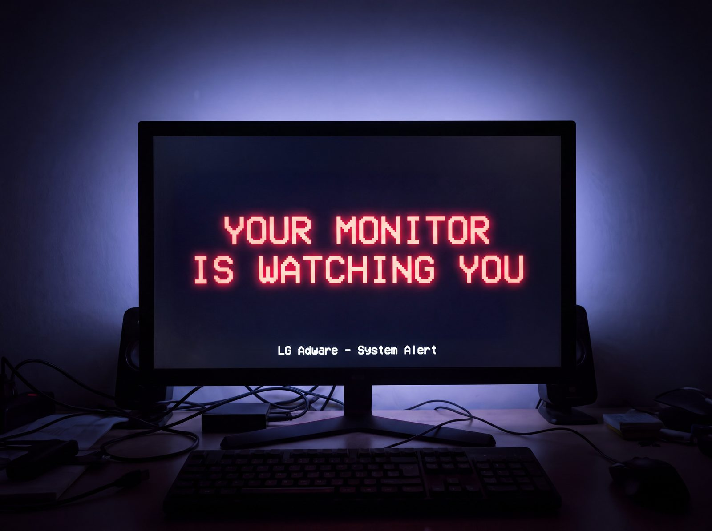

Consumer alert · Windows
You plugged in a monitor. Windows installed adware. It's still there.
No prompt. Installed by SYSTEM in 32 seconds. Unplugging the monitor doesn't remove it.

No prompt. Installed by SYSTEM in 32 seconds. Unplugging the monitor doesn't remove it.

Recovered from one of our own machines, timestamped.
Removing the app is not enough: both packages stay in the driver store, wired to 51 hardware IDs, and re-arm on the next listed panel. Both layers are in the fix. Full chain and INF directives: the forensics.
The ad was the symptom. The delivery is the story — and a promise is not a prompt. What LG actually said →
Gamers Nexus, 32 consecutive boots of a $1,200 UltraGear. One boot was quiet.
Disconnecting the monitor ends nothing. The software is a resident, not a guest.
Redacted screenshots from the machine held for verification. Send yours and we'll add them.
Twenty months of silent installs, three weeks of noise, then a promise nobody printed.
Every entry is sourced in the full report, alongside the claims we checked and chose not to publish.
Three checks, no monitor required. If an affected LG panel has ever touched this PC — months ago, long gone — run them.
Settings → Apps → Installed apps. Search LG Monitor, then McAfee.
Win+R → perfmon /rel. Look for LGElectronics.LGMonitorApp.
pnputil /enum-drivers → look for LG Electronics .inf entries.
Two layers, both required. Remove the app and the machine still re-arms; remove the packages too and it stops.
Settings → Apps → Installed apps → uninstall LG Monitor App. Or elevated PowerShell:
Get-AppxPackage -AllUsers LGElectronics.LGMonitorApp | Remove-AppxPackage -AllUsersElevated prompt. Find the two LG Electronics Inc. entries, then delete each by its oemXX.inf name:
pnputil /enum-drivers
pnputil /delete-driver oemXX.inf /uninstallSurgical: every other device keeps its drivers and companion software, and real driver updates keep flowing. Windows Home, no Group Policy? There's a registry method — and four caveats worth reading first, including that we have not reproduced a blocked install with it. The Home method, with caveats →
Read out of the LG package resident on our machine — 51 hardware IDs, WHQL-signed, dated August 27, 2024.
The models driving the news cycle — 34GX900A-B, 27GP83B, 27GN800, 32UN880-B — aren't in this revision. LG ships several, so the real footprint is larger than any one list. Seen one that isn't listed anywhere? Tell us.
▶ Gamers Nexus — the investigation that broke it. Watch on YouTube ↗
Six fields and a screenshot: monitor model · Windows build · install date (Reliability Monitor) · app version · first pop-up date, or “never” · last date an LG panel was connected.
(Get-AppxPackage -AllUsers LGElectronics.LGMonitorApp).VersionWhy a PC shop is publishing this: we build and support computers for a living. When hardware starts installing adware on our customers' machines without asking, it lands on our bench — so we tested it and published the whole chain. Reporting, not a pitch: there's nothing to buy here. More about CEC ↗